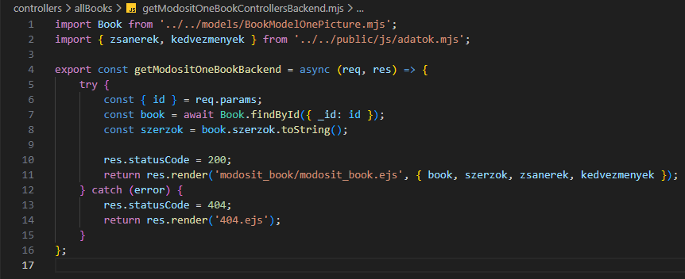

Egy könyv kezelése - getModositOneBookControllersBackend.mjs
Egy könyv kezelése - getModositOneBookControllersBackend.mjs

Ebben a részben szerkesztjük a controllers mappában a getModositOneBookControllersBackend.mjs állományt, amelyben kidolgozzuk a CRUD Read művelethez tartozó logikát. Ez megfelel a http GET metódus-hoz tartozó logikának.
-
Szerkesszük a
getModositOneBookControllersBackend.mjsállományunkat.-
import Book from '../../models/BookModelOnePicture.mjs';- aBookmodell alapértelmezett beimportálása. -
import { zsanerek, kedvezmenyek } from '../public/js/adatok.mjs';- a zsánerek és kedvezmények nevesített beimportálása. -
export const getModositOneBookBackend = (req, res) => {...};- hozzuk létre és vigyük ki nevesítve ahttp GET metódus-hoz tartozó logikát (ReadaCRUDműveletekből). -
try {... res.statusCode = 200; return res.render('modosit_book/modosit_book.ejs', { book, szerzok, zsanerek, kedvezmenyek });}- a sikeres ág a 200-ashttp hibakód-dal. Abook-t, szerzőket, zsánereket és kedvezményeket átadjuk amodositott_book/modositott_book.ejsállománynak. -
const { id } = req.params;- szedjük ki azidtulajdonságot areq.params-ból. -
const book = await Book.findById({ _id: id });- keressük meg a könyvet és töröljük az adatbázisból. -
const szerzok = book.szerzok.toString();- az adatbázisban tároltbook.szerzoktömbből csináljunk,-vel tagolt sztringet. -
catch (error) { res.statusCode = 404; return res.render('404.ejs'); }- a sikertelen ág a 404-eshttp hibakód-dal.
-